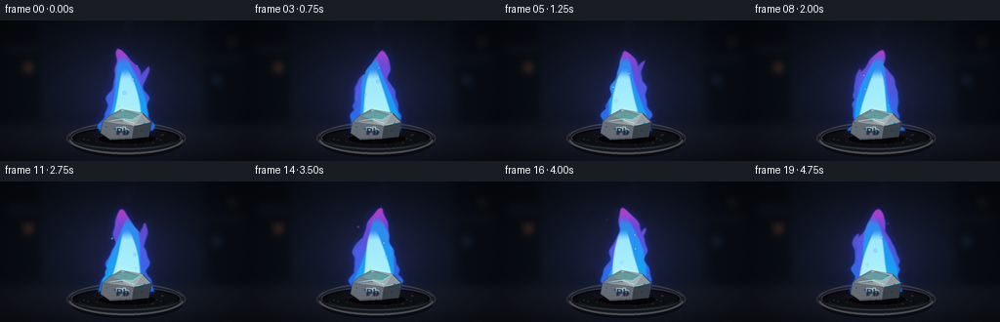
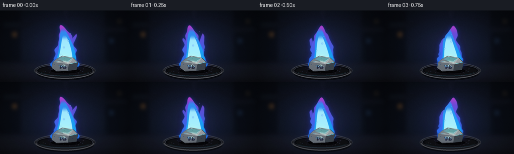
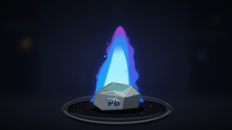

CODING AGENTS AS PIXEL WORLD MODELS
traex/GPT-5.6-Sol · material_0012
点击播放 · 原生 RGB 像素
逐轮保存的候选
回放视频、检查图与代码变化。
每份候选均可单独播放。实际图片检查记录在下方工具轨迹中。
候选 01播放与检查图
点击播放 · 原生 RGB 像素


展开代码变化
--- 上一保存版本
+++ 本次保存版本
@@ -0,0 +1,252 @@
+from pathlib import Path
+import math
+import numpy as np
+from PIL import Image, ImageDraw, ImageFilter, ImageFont
+import artifact_io
+
+# Deterministic procedural text-to-video renderer.
+W, H, N = 256, 144, 20
+S = 3
+w, h = W*S, H*S
+rng = np.random.default_rng(12017)
+Y, X = np.mgrid[0:h, 0:w]
+xf, yf = X/S, Y/S
+
+
+def smoothstep(a, b, x):
+ z = np.clip((x-a)/(b-a), 0, 1)
+ return z*z*(3-2*z)
+
+
+def rgba_layer(rgb, alpha):
+ arr = np.empty((h, w, 4), dtype=np.uint8)
+ arr[..., :3] = np.clip(rgb, 0, 255).astype(np.uint8)
+ arr[..., 3] = np.clip(alpha*255, 0, 255).astype(np.uint8)
+ return Image.fromarray(arr, 'RGBA')
+
+
+def poly(draw, pts, fill, outline=None, width=1):
+ q = [(int(x*S), int(y*S)) for x, y in pts]
+ draw.polygon(q, fill=fill)
+ if outline:
+ draw.line(q+[q[0]], fill=outline, width=width*S, joint='curve')
+
+
+def ellipse(draw, box, fill, outline=None, width=1):
+ draw.ellipse(tuple(int(v*S) for v in box), fill=fill, outline=outline, width=width*S)
+
+# Fixed environment plate: near-black laboratory/workshop setting.
+noise = rng.normal(0, 1, (h, w))
+# soften photographic sensor/stone texture
+noise_im = Image.fromarray(np.uint8(np.clip(noise*22+128, 0, 255))).filter(ImageFilter.GaussianBlur(S*0.42))
+soft_noise = (np.asarray(noise_im, np.float32)-128)/22
+rad = np.sqrt(((xf-129)/170)**2 + ((yf-76)/105)**2)
+base = np.zeros((h, w, 3), np.float32)
+base[..., 0] = 8 + 10*(1-rad) + 2*soft_noise
+base[..., 1] = 11 + 13*(1-rad) + 2.2*soft_noise
+base[..., 2] = 17 + 21*(1-rad) + 3.2*soft_noise
+# cool light behind flame and warmer falloff on bench
+base += np.exp(-(((xf-128)/72)**2 + ((yf-70)/64)**2))[..., None] * np.array([8, 9, 20])
+bench = smoothstep(98, 116, yf)
+base += bench[...,None] * np.array([7, 6, 6])
+base -= smoothstep(128, 144, yf)[...,None]*np.array([3,4,5])
+base = np.clip(base, 0, 255).astype(np.uint8)
+base_img = Image.fromarray(base).convert('RGBA')
+
+# Defocused background structures and practical lights.
+env = Image.new('RGBA', (w,h), (0,0,0,0)); d = ImageDraw.Draw(env, 'RGBA')
+d.rectangle((0, 0, 39*S, 101*S), fill=(3,5,9,105))
+d.rectangle((211*S, 0, w, 103*S), fill=(3,5,9,110))
+d.rectangle((8*S, 27*S, 61*S, 31*S), fill=(35,39,48,38))
+d.rectangle((196*S, 37*S, 251*S, 40*S), fill=(31,35,44,35))
+for cx, cy, rr, c in [(29,48,4,(245,151,55,75)), (222,61,3,(61,125,185,50)), (238,22,2,(232,169,77,42)), (68,19,2,(73,121,168,30))]:
+ ellipse(d,(cx-rr,cy-rr,cx+rr,cy+rr),c)
+env = env.filter(ImageFilter.GaussianBlur(4*S))
+base_img = Image.alpha_composite(base_img, env)
+
+# Fixed dish, lead and shadows are rendered separately to correctly layer flame behind metal.
+dish_back = Image.new('RGBA',(w,h),(0,0,0,0)); d = ImageDraw.Draw(dish_back,'RGBA')
+ellipse(d,(72,110,187,140),(0,0,0,125))
+ellipse(d,(68,105,190,136),(29,31,37,255),(68,72,80,190),1)
+ellipse(d,(73,108,185,132),(8,10,14,255),(95,100,109,120),1)
+ellipse(d,(78,111,181,130),(14,15,18,255))
+# powdery/fire scale deposits
+for i in range(42):
+ a = rng.uniform(0,2*math.pi); rr = math.sqrt(rng.random())
+ px = 129 + math.cos(a)*46*rr; py = 120 + math.sin(a)*8.2*rr
+ r = rng.uniform(.25,1.25)
+ col = [(74,71,65,65),(112,86,54,55),(45,52,60,70),(116,116,112,35)][int(rng.integers(4))]
+ ellipse(d,(px-r,py-r*.55,px+r,py+r*.55),col)
+# rear rim catches flame
+arcbox = tuple(int(v*S) for v in (70,104,188,137))
+d.arc(arcbox, 188, 350, fill=(122,128,139,100), width=S)
+
+dish_front = Image.new('RGBA',(w,h),(0,0,0,0)); df=ImageDraw.Draw(dish_front,'RGBA')
+df.arc(arcbox, 7, 173, fill=(94,96,101,210), width=2*S)
+df.arc(tuple(int(v*S) for v in (73,108,185,134)), 8, 172, fill=(22,23,28,255), width=2*S)
+# tiny reflected cyan line along inner front rim
+df.arc(tuple(int(v*S) for v in (78,110,180,131)), 18, 162, fill=(43,97,112,80), width=S)
+
+# Lead chunk: faceted, dull silver, squat and dense, with partly molten top.
+metal = Image.new('RGBA',(w,h),(0,0,0,0)); md=ImageDraw.Draw(metal,'RGBA')
+# small contact shadow
+ellipse(md,(101,116,159,126),(0,0,0,180))
+# main front and facets
+poly(md,[(105,104),(113,97),(145,96),(155,104),(152,119),(113,122),(103,115)],(91,99,108,255),(30,34,40,255),1)
+poly(md,[(113,97),(124,91),(146,95),(155,104),(137,108),(105,104)],(150,157,162,255),(64,70,78,220),1)
+poly(md,[(105,104),(137,108),(135,121),(113,122),(103,115)],(105,113,122,255))
+poly(md,[(137,108),(155,104),(152,119),(135,121)],(59,67,76,255))
+poly(md,[(113,97),(124,91),(126,103),(105,104)],(121,130,138,255))
+poly(md,[(124,91),(146,95),(137,108),(126,103)],(177,183,185,255))
+# top oxidation and a molten bright contact seam
+poly(md,[(121,94),(129,92),(143,96),(135,101),(124,100)],(70,76,81,170))
+md.line([(111*S,103*S),(125*S,101*S),(137*S,105*S)], fill=(219,234,228,125), width=S)
+md.line([(139*S,107*S),(153*S,104*S)], fill=(100,231,229,125), width=S)
+# little pits
+for px,py,rr in [(118,111,1.1),(145,113,.8),(128,97,.7),(109,109,.6),(148,105,.5)]:
+ ellipse(md,(px-rr,py-rr*.65,px+rr,py+rr*.65),(40,46,53,170))
+# engraved Pb on front face, manually centered with a font
+try:
+ font = ImageFont.truetype('/usr/share/fonts/truetype/dejavu/DejaVuSans-Bold.ttf', 9*S)
+except Exception:
+ font = ImageFont.load_default()
+md.text((119*S,108*S), 'Pb', font=font, fill=(39,45,52,210), stroke_width=1*S, stroke_fill=(156,165,171,80))
+# tiny lower specular edge
+md.line([(113*S,121*S),(135*S,120*S)],fill=(184,192,194,90),width=S)
+
+
+def flame_band(t, top, base_y, base_width, sway, phase=0.0):
+ """Smooth coherent flame ribbon represented as a soft alpha field."""
+ v = np.clip((base_y-yf)/(base_y-top), 0, 1) # 0 base, 1 tip
+ alive = smoothstep(top-1.5, top+2.2, yf) * (1-smoothstep(base_y-.5, base_y+2.0, yf))
+ # centerline gets livelier toward tip while base remains anchored
+ center = 129 + sway*(v**1.35)*np.sin(2*math.pi*(t*.72) + phase + v*3.8)
+ center += 2.1*np.sin(v*10.5 - t*1.5 + phase)*(v**1.8)
+ width = base_width*((1-v)**.62)
+ width *= .93 + .09*np.sin(v*19 - t*2.2 + phase) + .045*np.sin(v*35+t)
+ # signed soft interior
+ sd = width - np.abs(xf-center)
+ alpha = smoothstep(-1.25, 1.1, sd)*alive
+ return alpha, v, center, width
+
+
+def make_flame(k):
+ t = k/4.0
+ # Main steady tongue plus asymmetrical smaller licks at the shoulders.
+ a0,v0,_,_ = flame_band(t, 28.5 + 2.2*math.sin(t*1.25), 112, 28.5, 7.0, .35)
+ aL,vL,_,_ = flame_band(t, 52+3*math.sin(t*1.7+1), 109, 13, -10.5, 2.4)
+ # shift side ribbon fields horizontally by evaluating rolled images, keep gentle
+ aL=np.roll(aL,-11*S,axis=1)
+ aR,vR,_,_ = flame_band(t, 43+4*math.sin(t*1.45+2), 109, 12, 9.0, 4.0)
+ aR=np.roll(aR,12*S,axis=1)
+ outer=np.maximum(a0, np.maximum(aL*.90,aR*.94))
+ # Suppress rolled wrap (not near subject anyway)
+ outer[:, :45*S]=0; outer[:, 210*S:]=0
+
+ # Interior distance-like masks: nested coherent flames, all anchored to same fuel.
+ # inner white-cyan core low in the flame
+ yrel=(112-yf)/84
+ center_inner=128.5 + 2.4*np.sin(t*2.1 + yrel*4.5)
+ wi=16.5*np.clip((1-yrel/.77),0,1)**.58
+ inner=smoothstep(-1.0,1.0,wi-np.abs(xf-center_inner))
+ inner*=smoothstep(111.5,107,yf)*smoothstep(48,61,yf)
+ # middle turquoise body
+ wm=22*np.clip((1-yrel/.92),0,1)**.60
+ mid=smoothstep(-1.2,1.1,wm-np.abs(xf-(129+3.7*np.sin(t*1.45+yrel*4.8))))
+ mid*=smoothstep(112,108,yf)*smoothstep(34,45,yf)*outer
+
+ # halo and bloom from outer alpha
+ mask=Image.fromarray(np.uint8(outer*255),'L')
+ halo1=np.asarray(mask.filter(ImageFilter.GaussianBlur(11*S)),np.float32)/255
+ halo2=np.asarray(mask.filter(ImageFilter.GaussianBlur(4.2*S)),np.float32)/255
+
+ layers=[]
+ # broad violet atmospheric illumination, then electric-blue aura
+ col=np.zeros((h,w,3),np.float32); col[:]=[48,18,120]
+ layers.append(rgba_layer(col, np.clip(halo1*.29,0,.40)))
+ col[:]=[17,77,255]
+ layers.append(rgba_layer(col, np.clip(halo2*.42,0,.58)))
+
+ # Outer flame color gradients: cobalt at base/edge, ultraviolet/magenta at tip.
+ tip=np.clip((112-yf)/84,0,1)
+ rgb=np.zeros((h,w,3),np.float32)
+ rgb[...,0]=27 + 112*tip + 60*smoothstep(.76,1,tip)
+ rgb[...,1]=63 + 60*(1-tip) + 2*tip
+ rgb[...,2]=218 + 34*(1-tip)
+ layers.append(rgba_layer(rgb, outer*.93))
+ # Turquoise middle
+ rgb2=np.zeros_like(rgb)
+ rgb2[...,0]=8+40*tip; rgb2[...,1]=180-40*tip; rgb2[...,2]=245
+ layers.append(rgba_layer(rgb2, mid*.87))
+ # luminous central blue-white core
+ rgb3=np.zeros_like(rgb); rgb3[...,0]=188; rgb3[...,1]=252; rgb3[...,2]=255
+ core_alpha=inner*(.92-.18*tip)
+ layers.append(rgba_layer(rgb3, core_alpha))
+ # hottest short white-green heart at lead surface
+ hot=np.exp(-(((xf-129)/10.0)**2 + ((yf-105)/12.0)**2))*outer
+ rgb4=np.zeros_like(rgb); rgb4[...,0]=230; rgb4[...,1]=255; rgb4[...,2]=213
+ layers.append(rgba_layer(rgb4, hot*.83))
+ return layers, outer
+
+
+def smoke_and_sparks(k):
+ t=k/4.0
+ lay=Image.new('RGBA',(w,h),(0,0,0,0)); dr=ImageDraw.Draw(lay,'RGBA')
+ # translucent smoke wisps lit purple; move continuously rather than random flicker
+ for j in range(3):
+ pts=[]
+ for q in range(22):
+ yy=31-q*2.2-j*6
+ xx=130 + 5*math.sin(q*.32+t*.58+j*1.8) + j*3
+ pts.append((int(xx*S),int(yy*S)))
+ dr.line(pts,fill=(92,67,132,22-j*3),width=(3+j)*S)
+ lay=lay.filter(ImageFilter.GaussianBlur(3.2*S))
+ # a few persistent embers following looping upward trajectories
+ sd=Image.new('RGBA',(w,h),(0,0,0,0)); ss=ImageDraw.Draw(sd,'RGBA')
+ for j in range(5):
+ age=(t*.22+j*.193)%1.0
+ px=128 + (j-2)*7 + 5*math.sin(age*5+j*2.1)
+ py=102-age*72
+ fade=math.sin(math.pi*age)**1.8
+ rr=(.45+.45*fade)
+ ellipse(ss,(px-rr*2.5,py-rr*2.5,px+rr*2.5,py+rr*2.5),(53,82,255,int(35*fade)))
+ ellipse(ss,(px-rr,py-rr,px+rr,py+rr),(164,249,255,int(210*fade)))
+ sd=sd.filter(ImageFilter.GaussianBlur(.35*S))
+ return lay,sd
+
+frames=[]
+for k in range(N):
+ frame=base_img.copy()
+ # subtle breathing illumination on table/background, tied to steady flame
+ illum=.95+.035*math.sin(k*.55)
+ glow=np.exp(-(((xf-129)/61)**2 + ((yf-91)/46)**2))
+ light_rgb=np.zeros((h,w,3),np.float32); light_rgb[:]=[22,42,102]
+ frame=Image.alpha_composite(frame,rgba_layer(light_rgb, glow*.17*illum))
+ smoke,sparks=smoke_and_sparks(k)
+ frame=Image.alpha_composite(frame, smoke)
+ frame=Image.alpha_composite(frame,dish_back)
+ flame_layers,outer=make_flame(k)
+ for layer in flame_layers:
+ frame=Image.alpha_composite(frame,layer)
+ frame=Image.alpha_composite(frame,sparks)
+ # Metal sits in front of flame, with animated blue firelight reflection overlay.
+ frame=Image.alpha_composite(frame,metal)
+ refl=Image.new('RGBA',(w,h),(0,0,0,0)); rd=ImageDraw.Draw(refl,'RGBA')
+ pulse=int(18+8*math.sin(k*.67))
+ poly(rd,[(113,98),(125,92),(145,96),(136,104),(126,102)],(68,240,255,46+pulse))
+ rd.line([(106*S,104*S),(126*S,102*S)],fill=(150,255,250,65),width=S)
+ refl=refl.filter(ImageFilter.GaussianBlur(.65*S))
+ frame=Image.alpha_composite(frame,refl)
+ frame=Image.alpha_composite(frame,dish_front)
+ # restrained vignette for a close-up/cinematic focus
+ vign=np.clip(((xf-W/2)/(W*.72))**2+((yf-H/2)/(H*.78))**2,0,1)
+ black=np.zeros((h,w,3),np.float32)
+ frame=Image.alpha_composite(frame,rgba_layer(black,vign*.31))
+ # downsample antialiased to requested RGB dimensions
+ out=frame.convert('RGB').resize((W,H),Image.Resampling.LANCZOS)
+ frames.append(np.asarray(out,dtype=np.uint8))
+
+frames=np.stack(frames)
+assert frames.shape==(20,144,256,3) and frames.dtype==np.uint8
+artifact_io.save(frames, Path(__file__).resolve().parent)
+print('saved',frames.shape,frames.dtype)
可观测工具轨迹
实际执行的命令与返回图片。
命令 1exit 0
/bin/bash -lc "cat prompt.txt && printf '\\n--- GENERATION_RULES ---\\n' && cat GENERATION_RULES.md && printf '\\n--- TASK_SPEC ---\\n' && cat task_spec.json"
命令 2exit 0
/bin/bash -lc "find . -maxdepth 2 -type f -printf '%p\\n' | sort"
命令 3exit 0
/bin/bash -lc "sed -n '1,240p' artifact_io.py"
命令 4exit 2
/bin/bash -lc "cat > generate.py <<'PY'
from pathlib import Path
import math
import numpy as np
from PIL import Image, ImageDraw, ImageFilter, ImageFont
import artifact_io
# Deterministic procedural text-to-video renderer.
W, H, N = 256, 144, 20
S = 3
w, h = W*S, H*S
rng = np.random.default_rng(12017)
Y, X = np.mgrid[0:h, 0:w]
xf, yf = X/S, Y/S
def smoothstep(a, b, x):
z = np.clip((x-a)/(b-a), 0, 1)
return z*z*(3-2*z)
def rgba_layer(rgb, alpha):
arr = np.empty((h, w, 4), dtype=np.uint8)
arr[..., :3] = np.clip(rgb, 0, 255).astype(np.uint8)
arr[..., 3] = np.clip(alpha*255, 0, 255).astype(np.uint8)
return Image.fromarray(arr, 'RGBA')
def poly(draw, pts, fill, outline=None, width=1):
q = [(int(x*S), int(y*S)) for x, y in pts]
draw.polygon(q, fill=fill)
if outline:
draw.line(q+[q[0]], fill=outline, width=width*S, joint='curve')
def ellipse(draw, box, fill, outline=None, width=1):
draw.ellipse(tuple(int(v*S) for v in box), fill=fill, outline=outline, width=width*S)
# Fixed environment plate: near-black laboratory/workshop setting.
noise = rng.normal(0, 1, (h, w))
# soften photographic sensor/stone texture
noise_im = Image.fromarray(np.uint8(np.clip(noise*22+128, 0, 255))).filter(ImageFilter.GaussianBlur(S*0.42))
soft_noise = (np.asarray(noise_im, np.float32)-128)/22
rad = np.sqrt(((xf-129)/170)**2 + ((yf-76)/105)**2)
base = np.zeros((h, w, 3), np.float32)
base[..., 0] = 8 + 10*(1-rad) + 2*soft_noise
base[..., 1] = 11 + 13*(1-rad) + 2.2*soft_noise
base[..., 2] = 17 + 21*(1-rad) + 3.2*soft_noise
# cool light behind flame and warmer falloff on bench
base += np.exp(-(((xf-128)/72)**2 + ((yf-70)/64)**2))[..., None] * np.array([8, 9, 20])
bench = smoothstep(98, 116, yf)
base += bench[...,None] * np.array([7, 6, 6])
base -= smoothstep(128, 144, yf)[...,None]*np.array([3,4,5])
base = np.clip(base, 0, 255).astype(np.uint8)
base_img = Image.fromarray(base).convert('RGBA')
# Defocused background structures and practical lights.
env = Image.new('RGBA', (w,h), (0,0,0,0)); d = ImageDraw.Draw(env, 'RGBA')
d.rectangle((0, 0, 39*S, 101*S), fill=(3,5,9,105))
d.rectangle((211*S, 0, w, 103*S), fill=(3,5,9,110))
d.rectangle((8*S, 27*S, 61*S, 31*S), fill=(35,39,48,38))
d.rectangle((196*S, 37*S, 251*S, 40*S), fill=(31,35,44,35))
for cx, cy, rr, c in [(29,48,4,(245,151,55,75)), (222,61,3,(61,125,185,50)), (238,22,2,(232,169,77,42)), (68,19,2,(73,121,168,30))]:
ellipse(d,(cx-rr,cy-rr,cx+rr,cy+rr),c)
env = env.filter(ImageFilter.GaussianBlur(4*S))
base_img = Image.alpha_composite(base_img, env)
# Fixed dish, lead and shadows are rendered separately to correctly layer flame behind metal.
dish_back = Image.new('RGBA',(w,h),(0,0,0,0)); d = ImageDraw.Draw(dish_back,'RGBA')
ellipse(d,(72,110,187,140),(0,0,0,125))
ellipse(d,(68,105,190,136),(29,31,37,255),(68,72,80,190),1)
ellipse(d,(73,108,185,132),(8,10,14,255),(95,100,109,120),1)
ellipse(d,(78,111,181,130),(14,15,18,255))
# powdery/fire scale deposits
for i in range(42):
a = rng.uniform(0,2*math.pi); rr = math.sqrt(rng.random())
px = 129 + math.cos(a)*46*rr; py = 120 + math.sin(a)*8.2*rr
r = rng.uniform(.25,1.25)
col = rng.choice([(74,71,65,65),(112,86,54,55),(45,52,60,70),(116,116,112,35)])
ellipse(d,(px-r,py-r*.55,px+r,py+r*.55),col)
# rear rim catches flame
arcbox = tuple(int(v*S) for v in (70,104,188,137))
d.arc(arcbox, 188, 350, fill=(122,128,139,100), width=S)
dish_front = Image.new('RGBA',(w,h),(0,0,0,0)); df=ImageDraw.Draw(dish_front,'RGBA')
df.arc(arcbox, 7, 173, fill=(94,96,101,210), width=2*S)
df.arc(tuple(int(v*S) for v in (73,108,185,134)), 8, 172, fill=(22,23,28,255), width=2*S)
# tiny reflected cyan line along inner front rim
df.arc(tuple(int(v*S) for v in (78,110,180,131)), 18, 162, fill=(43,97,112,80), width=S)
# Lead chunk: faceted, dull silver, squat and dense, with partly molten top.
metal = Image.new('RGBA',(w,h),(0,0,0,0)); md=ImageDraw.Draw(metal,'RGBA')
# small contact shadow
ellipse(md,(101,116,159,126),(0,0,0,180))
# main front and facets
poly(md,[(105,104),(113,97),(145,96),(155,104),(152,119),(113,122),(103,115)],(91,99,108,255),(30,34,40,255),1)
poly(md,[(113,97),(124,91),(146,95),(155,104),(137,108),(105,104)],(150,157,162,255),(64,70,78,220),1)
poly(md,[(105,104),(137,108),(135,121),(113,122),(103,115)],(105,113,122,255))
poly(md,[(137,108),(155,104),(152,119),(135,121)],(59,67,76,255))
poly(md,[(113,97),(124,91),(126,103),(105,104)],(121,130,138,255))
poly(md,[(124,91),(146,95),(137,108),(126,103)],(177,183,185,255))
# top oxidation and a molten bright contact seam
poly(md,[(121,94),(129,92),(143,96),(135,101),(124,100)],(70,76,81,170))
md.line([(111*S,103*S),(125*S,101*S),(137*S,105*S)], fill=(219,234,228,125), width=S)
md.line([(139*S,107*S),(153*S,104*S)], fill=(100,231,229,125), width=S)
# little pits
for px,py,rr in [(118,111,1.1),(145,113,.8),(128,97,.7),(109,109,.6),(148,105,.5)]:
ellipse(md,(px-rr,py-rr*.65,px+rr,py+rr*.65),(40,46,53,170))
# engraved Pb on front face, manually centered with a font
try:
font = ImageFont.truetype('/usr/share/fonts/truetype/dejavu/DejaVuSans-Bold.ttf', 9*S)
except Exception:
font = ImageFont.load_default()
md.text((119*S,108*S), 'Pb', font=font, fill=(39,45,52,210), stroke_width=1*S, stroke_fill=(156,165,171,80))
# tiny lower specular edge
md.line([(113*S,121*S),(135*S,120*S)],fill=(184,192,194,90),width=S)
def flame_band(t, top, base_y, base_width, sway, phase=0.0):
\"\"\"Smooth coherent flame ribbon represented as a soft alpha field.\"\"\"
v = np.clip((base_y-yf)/(base_y-top), 0, 1) # 0 base, 1 tip
alive = smoothstep(top-1.5, top+2.2, yf) * (1-smoothstep(base_y-.5, base_y+2.0, yf))
# centerline gets livelier toward tip while base remains anchored
center = 129 + sway*(v**1.35)*np.sin(2*math.pi*(t*.72) + phase + v*3.8)
center += 2.1*np.sin(v*10.5 - t*1.5 + phase)*(v**1.8)
width = base_width*((1-v)**.62)
width *= .93 + .09*np.sin(v*19 - t*2.2 + phase) + .045*np.sin(v*35+t)
# signed soft interior
sd = width - np.abs(xf-center)
alpha = smoothstep(-1.25, 1.1, sd)*alive
return alpha, v, center, width
def make_flame(k):
t = k/4.0
# Main steady tongue plus asymmetrical smaller licks at the shoulders.
a0,v0,_,_ = flame_band(t, 28.5 + 2.2*math.sin(t*1.25), 112, 28.5, 7.0, .35)
aL,vL,_,_ = flame_band(t, 52+3*math.sin(t*1.7+1), 109, 13, -10.5, 2.4)
# shift side ribbon fields horizontally by evaluating rolled images, keep gentle
aL=np.roll(aL,-11*S,axis=1)
aR,vR,_,_ = flame_band(t, 43+4*math.sin(t*1.45+2), 109, 12, 9.0, 4.0)
aR=np.roll(aR,12*S,axis=1)
outer=np.maximum(a0, np.maximum(aL*.90,aR*.94))
# Suppress rolled wrap (not near subject anyway)
outer[:, :45*S]=0; outer[:, 210*S:]=0
# Interior distance-like masks: nested coherent flames, all anchored to same fuel.
# inner white-cyan core low in the flame
yrel=(112-yf)/84
center_inner=128.5 + 2.4*np.sin(t*2.1 + yrel*4.5)
wi=16.5*np.clip((1-yrel/.77),0,1)**.58
inner=smoothstep(-1.0,1.0,wi-np.abs(xf-center_inner))
inner*=smoothstep(111.5,107,yf)*smoothstep(48,61,yf)
# middle turquoise body
wm=22*np.clip((1-yrel/.92),0,1)**.60
mid=smoothstep(-1.2,1.1,wm-np.abs(xf-(129+3.7*np.sin(t*1.45+yrel*4.8))))
mid*=smoothstep(112,108,yf)*smoothstep(34,45,yf)*outer
# halo and bloom from outer alpha
mask=Image.fromarray(np.uint8(outer*255),'L')
halo1=np.asarray(mask.filter(ImageFilter.GaussianBlur(11*S)),np.float32)/255
halo2=np.asarray(mask.filter(ImageFilter.GaussianBlur(4.2*S)),np.float32)/255
layers=[]
# broad violet atmospheric illumination, then electric-blue aura
col=np.zeros((h,w,3),np.float32); col[:]=[48,18,120]
layers.append(rgba_layer(col, np.clip(halo1*.29,0,.40)))
col[:]=[17,77,255]
layers.append(rgba_layer(col, np.clip(halo2*.42,0,.58)))
# Outer flame color gradients: cobalt at base/edge, ultraviolet/magenta at tip.
tip=np.clip((112-yf)/84,0,1)
rgb=np.zeros((h,w,3),np.float32)
rgb[...,0]=27 + 112*tip + 60*smoothstep(.76,1,tip)
rgb[...,1]=63 + 60*(1-tip) + 2*tip
rgb[...,2]=218 + 34*(1-tip)
layers.append(rgba_layer(rgb, outer*.93))
# Turquoise middle
rgb2=np.zeros_like(rgb)
rgb2[...,0]=8+40*tip; rgb2[...,1]=180-40*tip; rgb2[...,2]=245
layers.append(rgba_layer(rgb2, mid*.87))
# luminous central blue-white core
rgb3=np.zeros_like(rgb); rgb3[...,0]=188; rgb3[...,1]=252; rgb3[...,2]=255
core_alpha=inner*(.92-.18*tip)
layers.append(rgba_layer(rgb3, core_alpha))
# hottest short white-green heart at lead surface
hot=np.exp(-(((xf-129)/10.0)**2 + ((yf-105)/12.0)**2))*outer
rgb4=np.zeros_like(rgb); rgb4[...,0]=230; rgb4[...,1]=255; rgb4[...,2]=213
layers.append(rgba_layer(rgb4, hot*.83))
return layers, outer
def smoke_and_sparks(k):
t=k/4.0
lay=Image.new('RGBA',(w,h),(0,0,0,0)); dr=ImageDraw.Draw(lay,'RGBA')
# translucent smoke wisps lit purple; move continuously rather than random flicker
for j in range(3):
pts=[]
for q in range(22):
yy=31-q*2.2-j*6
xx=130 + 5*math.sin(q*.32+t*.58+j*1.8) + j*3
pts.append((int(xx*S),int(yy*S)))
dr.line(pts,fill=(92,67,132,22-j*3),width=(3+j)*S)
lay=lay.filter(ImageFilter.GaussianBlur(3.2*S))
# a few persistent embers following looping upward trajectories
sd=Image.new('RGBA',(w,h),(0,0,0,0)); ss=ImageDraw.Draw(sd,'RGBA')
for j in range(5):
age=(t*.22+j*.193)%1.0
px=128 + (j-2)*7 + 5*math.sin(age*5+j*2.1)
py=102-age*72
fade=math.sin(math.pi*age)**1.8
rr=(.45+.45*fade)
ellipse(ss,(px-rr*2.5,py-rr*2.5,px+rr*2.5,py+rr*2.5),(53,82,255,int(35*fade)))
ellipse(ss,(px-rr,py-rr,px+rr,py+rr),(164,249,255,int(210*fade)))
sd=sd.filter(ImageFilter.GaussianBlur(.35*S))
return lay,sd
frames=[]
for k in range(N):
frame=base_img.copy()
# subtle breathing illumination on table/background, tied to steady flame
illum=.95+.035*math.sin(k*.55)
glow=np.exp(-(((xf-129)/61)**2 + ((yf-91)/46)**2))
light_rgb=np.zeros((h,w,3),np.float32); light_rgb[:]=[22,42,102]
frame=Image.alpha_composite(frame,rgba_layer(light_rgb, glow*.17*illum))
smoke,sparks=smoke_and_sparks(k)
frame=Image.alpha_composite(frame, smoke)
frame=Image.alpha_composite(frame,dish_back)
flame_layers,outer=make_flame(k)
for layer in flame_layers:
frame=Image.alpha_composite(frame,layer)
frame=Image.alpha_composite(frame,sparks)
# Metal sits in front of flame, with animated blue firelight reflection overlay.
frame=Image.alpha_composite(frame,metal)
refl=Image.new('RGBA',(w,h),(0,0,0,0)); rd=ImageDraw.Draw(refl,'RGBA')
pulse=int(18+8*math.sin(k*.67))
poly(rd,[(113,98),(125,92),(145,96),(136,104),(126,102)],(68,240,255,46+pulse))
rd.line([(106*S,104*S),(126*S,102*S)],fill=(150,255,250,65),width=S)
refl=refl.filter(ImageFilter.GaussianBlur(.65*S))
frame=Image.alpha_composite(frame,refl)
frame=Image.alpha_composite(frame,dish_front)
# restrained vignette for a close-up/cinematic focus
vign=np.clip(((xf-W/2)/(W*.72))**2+((yf-H/2)/(H*.78))**2,0,1)
black=np.zeros((h,w,3),np.float32)
frame=Image.alpha_composite(frame,rgba_layer(black,vign*.31))
# downsample antialiased to requested RGB dimensions
out=frame.convert('RGB').resize((W,H),Image.Resampling.LANCZOS)
frames.append(np.asarray(out,dtype=np.uint8))
frames=np.stack(frames)
assert frames.shape==(20,144,256,3) and frames.dtype==np.uint8
artifact_io.save(frames, Path(__file__).resolve().parent)
print('saved',frames.shape,frames.dtype)
PY
python generate.py
ls -lh pixels.npz inspection.png index.html frames/00.png"命令 5exit 0
/bin/bash -lc "python - <<'PY'
p='generate.py'
s=open(p).read()
s=s.replace(\" col = rng.choice([(74,71,65,65),(112,86,54,55),(45,52,60,70),(116,116,112,35)])\", \" col = [(74,71,65,65),(112,86,54,55),(45,52,60,70),(116,116,112,35)][int(rng.integers(4))]\")
open(p,'w').write(s)
PY
python generate.py
python - <<'PY'
import numpy as np
from PIL import Image
z=np.load('pixels.npz')['pixels']
print('pixels',z.shape,z.dtype,'range',z.min(),z.max())
print('inspection',Image.open('inspection.png').size)
# temporal movement summary in decoded RGB
f=[]
for i in range(20): f.append(np.array(Image.open(f'frames/{i:02d}.png'),dtype=np.float32))
f=np.stack(f)
print('mean_abs_frame_deltas',np.abs(np.diff(f,axis=0)).mean(axis=(1,2,3)).round(3).tolist())
PY
ls -lh pixels.npz inspection.png transition_check.png index.html frames/00.png"视觉工具实际返回图片 1

视觉工具实际返回图片 2

保存候选 1 份；完成命令 5 次；可验证图片返回 2 张。原始 API 响应与完整日志保留在本地。